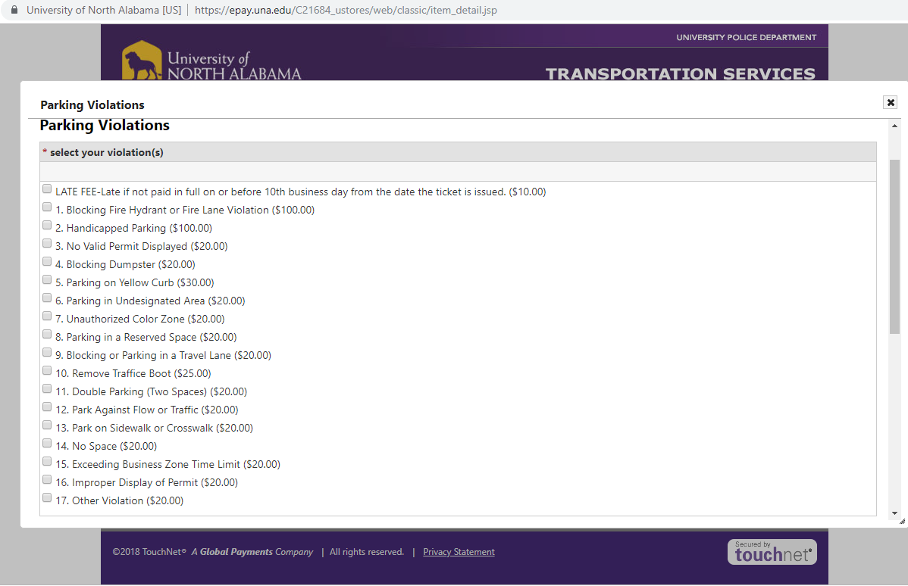

I wanted to change the original from having to check boxes to selecting a button that contains your violation. The numbers were made are larger so it is easy to spot and locate your violation. I feel like it is more enjoyable to look at and an overall update in website design.
